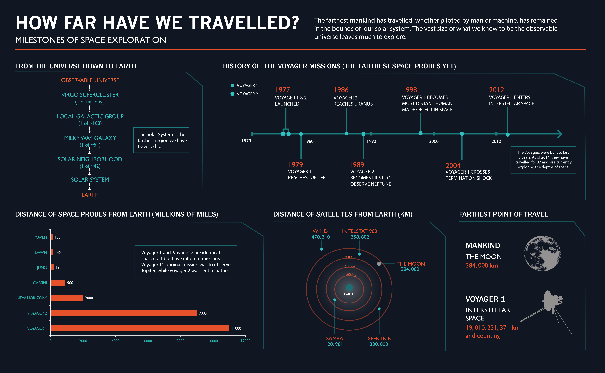
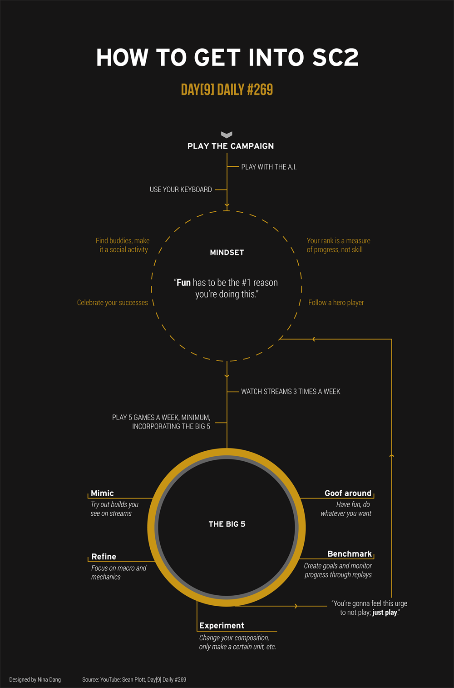
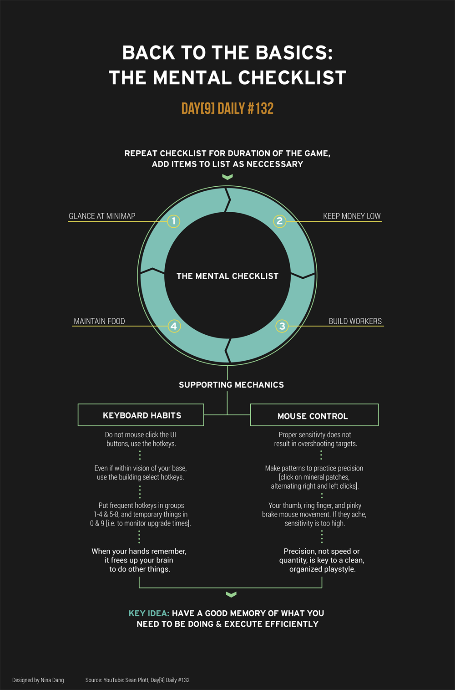

Nina Dang
FOCUS
User Experience
Visual Design
LOCATION
Seattle, WA
BACKGROUND
I'm a senior at the University of Washington and will graduate with a B.S. in Informatics in June 2015. My major incorporates curriculum from HCI, UCD, and Web Development (this site was coded by myself!).
I recently interned at Blizzard Entertainment, where I developed a web application to enhance the usability of a Tableau Server. Currently, I'm the Teaching Assistant for a course on Data Visualization and Aesthetics.
Design is something that gets me moving, inspired, and at my brightest. Entering the industry is something I'm excitedly looking forward to.
PROJECTS
UX
BlizzStats
Aegean Cruises
Narrative
VISUAL DESIGN
Blizzard BI Logo
How Far Have We Travelled?
InfoCrafts
BlizzStats
Blizzard Entertainment
Problem
I was presented with a Tableau Server whose problematic interface stunted users' productivity.
Process
Surveys, interviews, and critique meetings established my design choices and iterations.
Techstack: HTML5, CSS3, jQuery, PHP, PostgreSQL
Result
I designed the server to be more personal to Blizzard through the aesthetic and the "New Game" categories. It also became personal to the user with the "Recently Viewed" feature.
Aegean Cruises
Class Project
Problem
The goal was to improve our satisfaction of cruiseline excursions through a website. Our target audience was teenagers.
Process
Analysis of demographics, psychographics, personas, and context scenarios led us to consider the elements of friendship and sharing as catalysts for satisfaction.
Result
Seeing an influx of reactions from personal networks allows the impression to last after the excursion is over. Thus, the website features a chat functionality to encourage the use of social media during and after the excursion.
Narrative
Hackathon Project
Problem
The theme of the hackathon was to create an application that fosters educational growth or benefit.
Process
Having two former teachers on our team, we listened to their past experiences and came to the idea of creative writing.
Techstack: HTML5, CSS3, jQuery
Result
Upon visiting the site, a random prompt paired with an image is generated for the user. The user types their narrative in the text editor and can refer to helpers on the side if they need more inspiration.
Business Intelligence Logo
Blizzard Entertainment
Concept
The idea behind this logo was to recolor the original Blizzard Entertainment logo with the letters, "BI". The Business Intelligence department is commonly referred to as BI, and the faded graphs provide context as to what the department is all about (data!).
How Far Have We Travelled?
Class Project
Concept
This infographic explores the history of space travel under the topic of distance. The colors and design elements were chosen to create a dark, futuristic-inspired aesthetic.

InfoCrafts
Personal Project
Concept
To improve my skills in StarCraft II, I often watch videos created by my favorite video game personality, Sean "Day[9]" Plott. These visualizations are designed to be memory joggers, but I also wanted to enhance the content by through encoding, visual hierarchy, color, and shape associations. This helps to make absorbing the information presented in a simple manner.
 
CONTACT ME